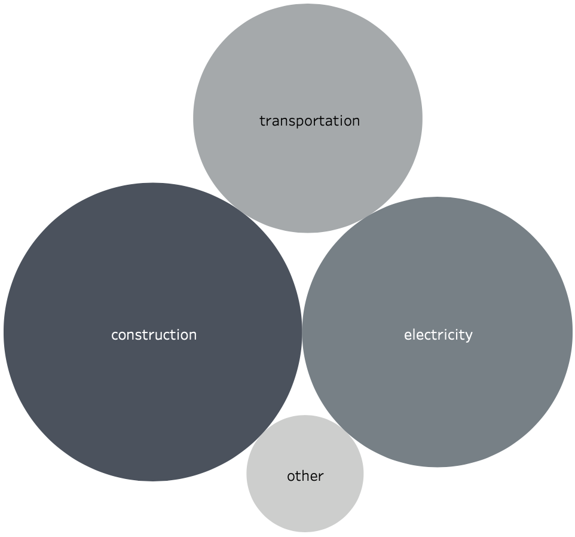
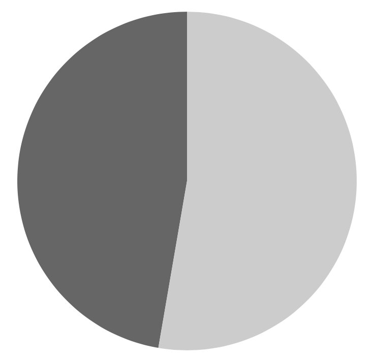
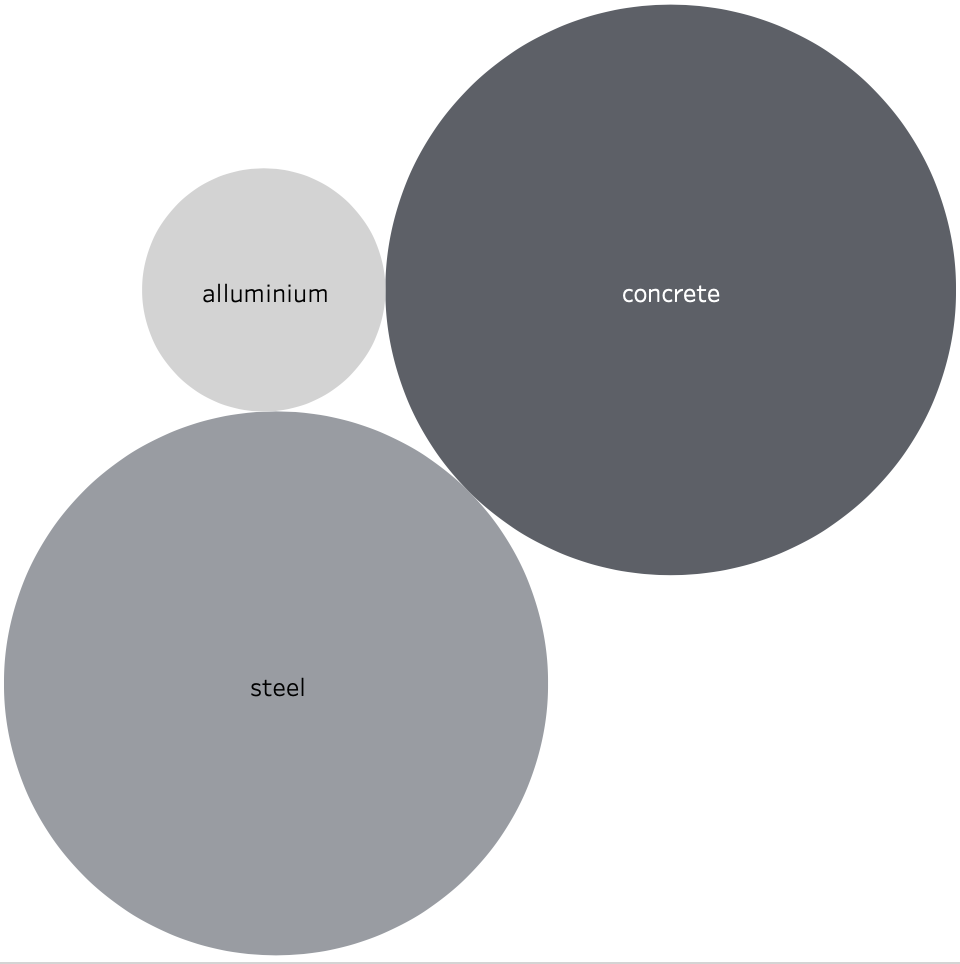
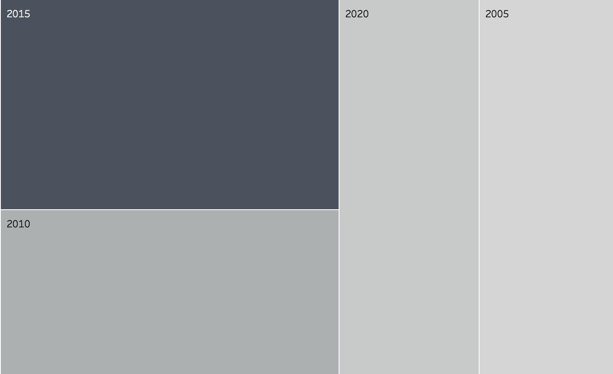

Construction activity around the world contributes to 40 percent of the total global carbon emissions. But, when the pandemic hit in the year of 2019, there has been a significant decline in the global carbon emissions due to a halt in the construction activity around the world.
NARRATIVE
CO2 emissions by sector: construction 39%, electricity 32%, transportation 23%, other 6%. Not just in emissions, but construction also contributes to 35% of the global energy consumption
Out of the 39%, 28% is operations and 11% materials. So 71.8% of emissions due to construction is due to construction operations and 28.2% because of material manufacturing
Concrete, steel, and aluminum are responsible for 23% of total global emissions - each accounting for 11%, 10% and 2% respectively
Construction activities dropped by 10 to 25% and the CO2 emissions decreased by 5 to 7% when the pandemic hit in the year of 2019
In 2015, the construction and operation of buildings was responsible for 38 per cent (13.1 gigatons) of global energy-related carbon dioxide (CO2) emissions. By 2020, CO2 emissions in the sector had fallen an estimated 10 per cent to 11.7 gigatons, a level not seen since 2007.
CO2 emissions by sector

construction 39%, electricity 32%,
transportation 23%, other 6%
This visualisation shows the comparison of percentages of CO2 emissions caused due to different sectors
Construction contributes to 35% of the global energy consumption

Not just in emissions, but construction also contributes to 35% of the global energy consumption
This chart shows the comparison of percentages of CO2 emissions and energy consumptions caused due to construction activities
Operations vs Materials
Out of the 39% of global carbon emissions caused due to constructions, 28% is operations and 11% materials.
So 71.8% of emissions due to construction is due to construction operations and 28.2% because of material manufacturing
This visualisation shows the comparison between the percentages of CO2 emissions caused due to building operations and the building materials' manufacturing
concrete, steel and aluminum

concrete, steel, and aluminum – are responsible for 23% of total global emissions - each accounting for 11%, 10% and 2% respectively
This chart shows the comparison of percentages of CO2 emissions by different materials used in construction
Carbon emissions in 2007, 2015 and 2020

In 2015, the construction and operation of buildings was responsible for 38 per cent (13.1 gigatons) of global energy-related carbon dioxide (CO2) emissions. By 2020, CO2 emissions in the sector had fallen an estimated 10 per cent to 11.7 gigatons, a level not seen since 2007.
The visualisation shows how the levels of CO2 emissions rose from 2005 to 2010, and then from 2010 to 2015, but as the pandemic hit in 2020, the levels have almost dropped and matched the levels in 2005